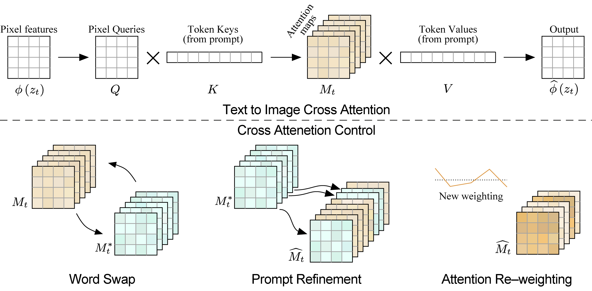
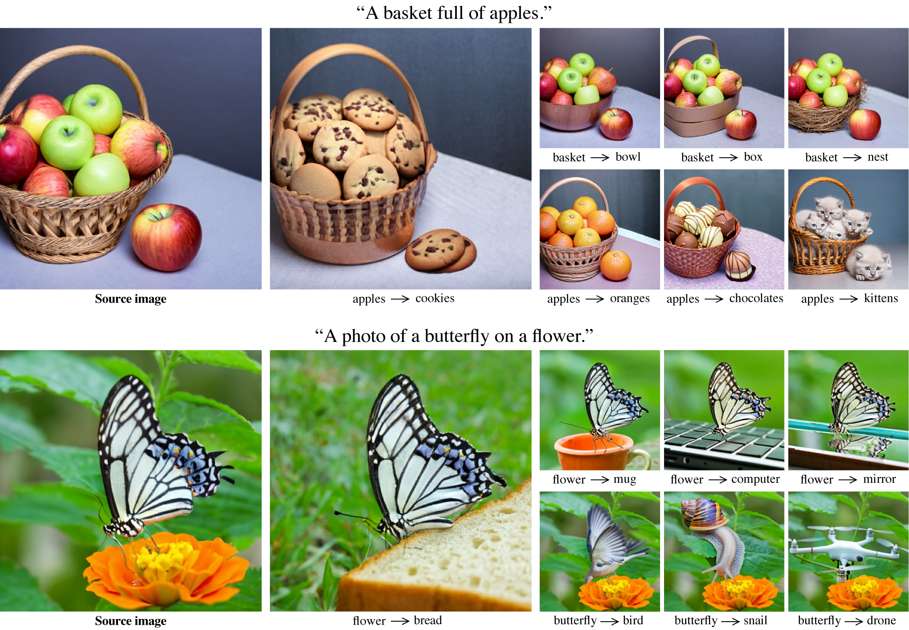
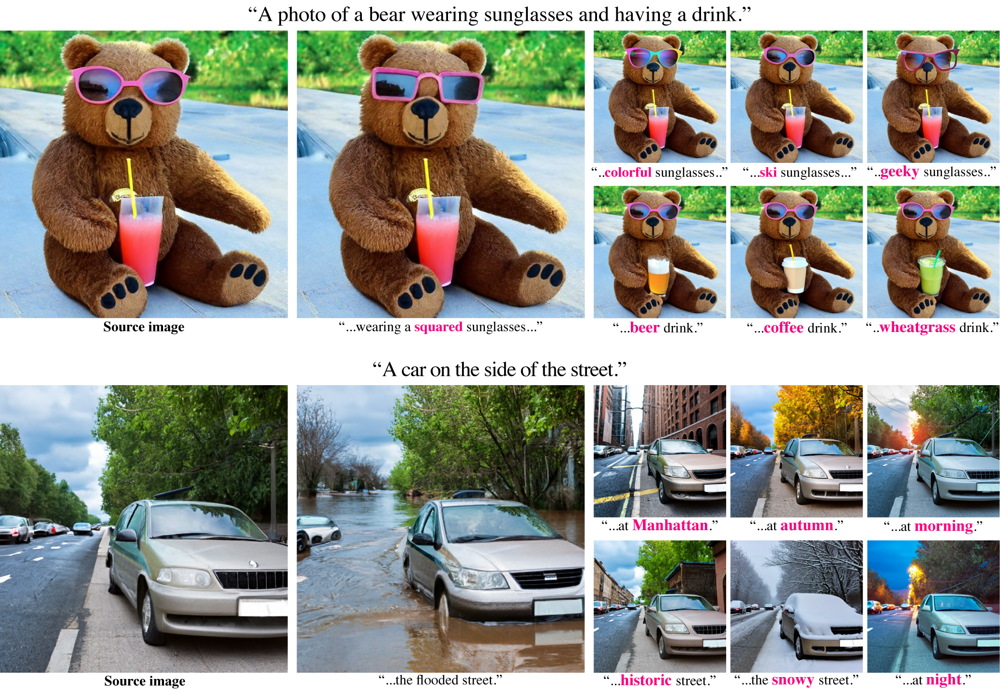
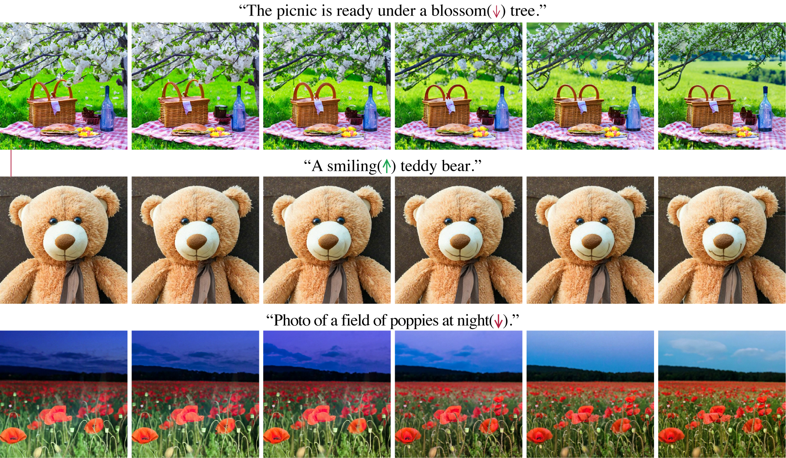

Prompt-to-Prompt Image Editing with Cross-Attention Control

Recent large-scale text-driven synthesis diffusion models have attracted much attention thanks to their remarkable capabilities of generating highly diverse images that follow given text prompts. Therefore, it is only natural to build upon these synthesis models to provide text-driven image editing capabilities. However, Editing is challenging for these generative models, since an innate property of an editing technique is to preserve some content from the original image, while in the text-based models, even a small modification of the text prompt often leads to a completely different outcome. State-of-the-art methods mitigate this by requiring the users to provide a spatial mask to localize the edit, hence, ignoring the original structure and content within the masked region. In this paper, we pursue an intuitive prompt-to-prompt editing framework, where the edits are controlled by text only. We analyze a text-conditioned model in depth and observe that the cross-attention layers are the key to controlling the relation between the spatial layout of the image to each word in the prompt. With this observation, we propose to control the attention maps of the edited image by injecting the attention maps of the original image along the diffusion process. Our approach enables us to monitor the synthesis process by editing the textual prompt only, paving the way to a myriad of caption-based editing applications such as localized editing by replacing a word, global editing by adding a specification, and even controlling the extent to which a word is reflected in the image. We present our results over diverse images and prompts with different text-to-image models, demonstrating high-quality synthesis and fidelity to the edited prompts.
Our method enables editing generated images by only modifying the textual prompt. For example, here we first generate an image from the input prompt "A cat with a hat is lying on a beach chair." using the Imagen text-to-image diffusion model. Then, with our approach, we can easily replace the hat or the main character.
Another prompt editing example is modifying the semantic influence of specific words in the prompt over the generated image. Using our method, we can amplify or attenuate the "fluffiness" of the bunny doll in the image below.
The key observation behind our method is that the spatial layout and geometry of an image depend on the cross-attention maps. Below, we show that pixels are attend more to the words that describe them.

Therefore, our main idea is to inject the cross-attention maps during the diffusion process, controlling which pixels attend to which tokens of the prompt text during which diffusion steps. To apply our approach to various creative editing applications, we show several methods to control the cross-attention maps through a simple and semantic interface. In the word swap control, we modify a token in the prompt (e.g., “dog” to “cat”), while fixing the cross-attention maps, to preserve the scene composition. In the second, prompt refinement control, we add new words to the prompt and freeze the attention to previous tokens while allowing new attention to flow to the new tokens. This enables us to perform global editing or modify a specific object. In the third, attention Re-weighting control, we increase or decrease the attention weights of specified tokens. This results with amplification or attenuation of the semantic effect of the tokens on the generated image.
In this case, we swap tokens of the original prompt with others, e.g., “a basket with apples." to “a basket with oranges.”.
By extending the initial prompt, we perform local or global editing.
By reducing or increasing the cross-attention of specific words (marked with an arrow), we control the extent to which it influences the generation.
By adding a style description to the prompt while injecting the source attention maps, we can create various images in the new desired styles that preserve the structure of the original image.
@article{hertz2022prompt,
title={Prompt-to-prompt image editing with cross attention control},
author={Hertz, Amir and Mokady, Ron and Tenenbaum, Jay and Aberman, Kfir and Pritch, Yael and Cohen-Or, Daniel},
booktitle={arXiv preprint arXiv:2208.01626},
year={2022}
}
We thank Noa Glaser, Adi Zicher, Yaron Brodsky, Shlomi Fruchter and David Salesin for their valuable inputs that helped improve this work, and to Mohammad Norouzi, Chitwan Saharia and William Chan for providing us with their support and the pretrained models of Imagen. The website template is borrowed from DreamBooth.